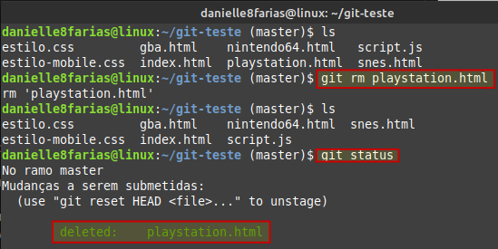
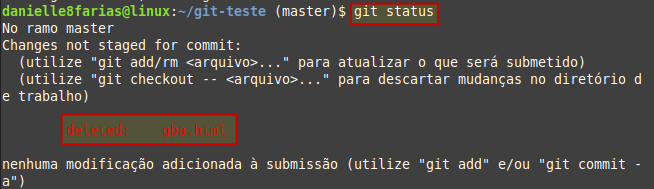

Para apagar um arquivo no repositório Git, fazemos
$ git rm <nome do arquivo>
- $ indica que você deve usar o usuário comum para fazer essa operação.
- rm, do inglês remove, para remover o arquivo.
- digite o nome do arquivo sem os sinais sem os sinais < >
Exemplo:
Vamos deletar o arquivo playstation.html do nosso repositório.
Para finalizar, basta fazer o commit dessa remoção.
Caso você tenha excluido o arquivo de outra maneira, ao digitar git status, o Git irá informar sobre o arquivo.
Exemplo:
Excluímos o arquivo gba.html diretamente no diretório.

Então, para registrar essa exclusão, podemos usar os comandos git add ou git rm. Assim, temos:
Para excluir uma pasta/diretório não vazio, basta incluir a flag -r, de recursividade, para incluir toda a árvore do diretório. Assim:
$ git rm -r <nome do arquivo>